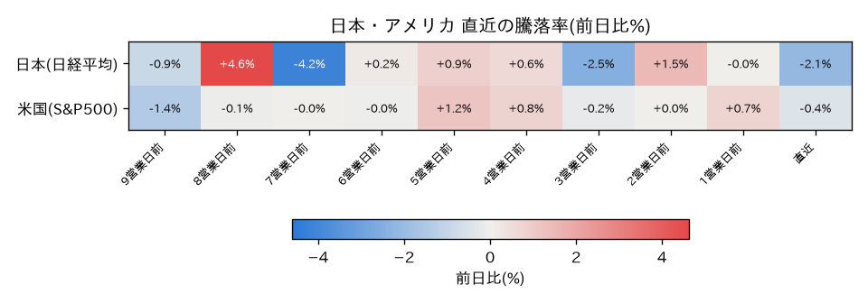

日経平均株価
現在値: 68,256.96

# 本日の市場分析コメント(2026年7月7日) ## 日経平均株価 本日の日経平均は**68,256.96円**で、前日比約1,481円の下落と大きく調整しました。7月1日に70,474円まで上昇し高値をつけた後、直近では7万円を挟んだ攻防が続いていましたが、本日はその節目を明確に下回る展開となりました。7月2日にも68,733円まで下押しする場面があり、7万円台での上値の重さが意識される値動きです。 ## ドル円 ドル円は**161.89円**で推移し、7月1日の162.63円をピークに緩やかな円高方向へと戻しています。ここ数日は161円台後半で比較的落ち着いた動きとなっており、本日の株価下落と為替の大きな変動との連動は限定的とみられます。 ## 日経平均VI 本日のVIは**29.7**と、前日の37.36から低下しています。株価が大きく下落した割にはVIが落ち着いており、警戒水準である50を大きく下回る水準です。6月29日に一時43.36まで上昇した局面と比べても、市場のパニック的な反応は見られない状況です。 ## Fear & Greed指数 本日は**40.5**と、前日の44.0からやや低下したものの、依然として中立圏で推移しています。6月下旬には24〜25台まで低下し「恐怖」寄りの局面がありましたが、7月に入り40台前半まで回復しており、極度の恐怖(20以下)の水準からは距離があります。 ## 総括 本日は日経平均が大きく下落する一方、VI・Fear & Greed指数ともにパニック的な動きは見られず、センチメント指標は比較的落ち着いています。株価下落がボラティリティの急伸を伴っていない点は、今回の下げが過度なリスク回避というよりも、7万円台での高値警戒感からの利益確定・調整の色合いが強い可能性を示唆します。なお、直近7日間に該当するXの投稿はなく、投稿内容と市場動向の関連づけは行えませんでした。今後は7万円の節目を回復できるか、また為替の円高進行が輸出関連に及ぼす影響を注視したいところです。 ※本コメントは客観的なデータ観察に基づくものであり、投資判断を推奨するものではありません。

現在値: 68,256.96
現在値: 162.14

現在値: 29.70

現在値: 43.00

投稿がありません。